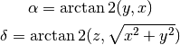
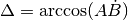
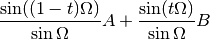

API Documentation¶
Vectors¶
The sphere.vector module contains the basic operations for handling vectors and converting them to and from other representations.
- sphere.vector.radec_to_vector(ra, dec, degrees=True)[source]¶
Converts a location on the unit sphere from right-ascension and declination to an x, y, z vector.
Parameters : ra, dec : scalars or 1-D arrays
degrees : bool, optional
If True, (default) ra and dec are in decimal degrees, otherwise in radians.
Returns : x, y, z : tuple of scalars or 1-D arrays of the same length
Notes
Where right-ascension is α and declination is δ:

- sphere.vector.vector_to_radec(x, y, z, degrees=True)[source]¶
Converts a vector to right-ascension and declination.
Parameters : x, y, z : scalars or 1-D arrays
The input vectors
degrees : bool, optional
If True (default) the result is returned in decimal degrees, otherwise radians.
Returns : ra, dec : tuple of scalars or arrays of the same length
Notes
Where right-ascension is α and declination is δ:

- sphere.vector.normalize_vector(xyz, output=None)[source]¶
Normalizes a vector so it falls on the unit sphere.
Parameters : xyz : Nx3 array of vectors
The input vectors
output : Nx3 array of vectors, optional
The array to store the results in. If None, a new array will be created and returned.
Returns : output : Nx3 array of vectors
- sphere.vector.rotate_around(x, y, z, u, v, w, theta, degrees=True)[source]¶
Rotates the vector (x, y, z) around the arbitrary axis defined by vector (u, v, w) by theta.
It is assumed that both (x, y, z) and (u, v, w) are already normalized.
Parameters : x, y, z : doubles
The normalized vector to rotate
u, v, w : doubles
The normalized vector to rotate around
theta : double, or array of doubles
The amount to rotate
degrees : bool, optional
When True, theta is given in degrees, otherwise radians.
Returns : X, Y, Z : doubles
The rotated vector
Great circle arcs¶
The sphere.great_circle_arc module contains functions for computing the length, intersection, angle and midpoint of great circle arcs.
Great circles are circles on the unit sphere whose center is coincident with the center of the sphere. Great circle arcs are the section of those circles between two points on the unit sphere.
- sphere.great_circle_arc.angle(A, B, C, degrees=True)[source]¶
Returns the angle at B between AB and BC.
This always returns the shortest angle < π.
Parameters : A, B, C : (x, y, z) triples or Nx3 arrays of triples
Points on sphere.
degrees : bool, optional
If True (default) the result is returned in decimal degrees, otherwise radians.
Returns : angle : float or array of floats
The angle at B between AB and BC.
References
[R1] Miller, Robert D. Computing the area of a spherical polygon. Graphics Gems IV. 1994. Academic Press.
- sphere.great_circle_arc.intersection(A, B, C, D)[source]¶
Returns the point of intersection between two great circle arcs. The arcs are defined between the points AB and CD. Either A and B or C and D may be arrays of points, but not both.
Parameters : A, B : (x, y, z) triples or Nx3 arrays of triples
Endpoints of the first great circle arc.
C, D : (x, y, z) triples or Nx3 arrays of triples
Endpoints of the second great circle arc.
Returns : T : (x, y, z) triples or Nx3 arrays of triples
If the given arcs intersect, the intersection is returned. If the arcs do not intersect, the triple is set to all NaNs.
Notes
The basic intersection is computed using linear algebra as follows [R2]:

To determine the correct sign (i.e. hemisphere) of the intersection, the following four values are computed:

For
 , if all positive
, if all positive  is returned as-is. If
all negative, is multiplied by
is returned as-is. If
all negative, is multiplied by  . Otherwise
the intersection does not exist and is undefined.
. Otherwise
the intersection does not exist and is undefined.References
[R2] (1, 2) Method explained in an e-mail by Roger Stafford. http://www.mathworks.com/matlabcentral/newsreader/view_thread/276271
- sphere.great_circle_arc.intersects(A, B, C, D)[source]¶
Returns True if the great circle arcs between AB and CD intersect. Either A and B or C and D may be arrays of points, but not both.
Parameters : A, B : (x, y, z) triples or Nx3 arrays of triples
Endpoints of the first great circle arc.
C, D : (x, y, z) triples or Nx3 arrays of triples
Endpoints of the second great circle arc.
Returns : intersects : bool or array of bool
If the given arcs intersect, the intersection is returned as True.
- sphere.great_circle_arc.length(A, B, degrees=True)[source]¶
Returns the angular distance between two points (in vector space) on the unit sphere.
Parameters : A, B : (x, y, z) triples or Nx3 arrays of triples
The endpoints of the great circle arc, in vector space.
degrees : bool, optional
If True (default) the result is returned in decimal degrees, otherwise radians.
Returns : length : scalar or array of scalars
The angular length of the great circle arc.
Notes
The length is computed using the following:

- sphere.great_circle_arc.midpoint(A, B)[source]¶
Returns the midpoint on the great circle arc between A and B.
Parameters : A, B : (x, y, z) triples or Nx3 arrays of triples
The endpoints of the great circle arc. It is assumed that these points are already normalized.
Returns : midpoint : (x, y, z) triple or Nx3 arrays of triples
The midpoint between A and B, normalized on the unit sphere.
- sphere.great_circle_arc.interpolate(A, B, steps=50)[source]¶
Interpolate along the great circle arc.
Parameters : A, B : (x, y, z) triples or Nx3 arrays of triples
The endpoints of the great circle arc. It is assumed thats these points are already normalized.
steps : int
The number of interpolation steps
Returns : array : (x, y, z) triples
The points interpolated along the great circle arc
Notes
This uses Slerp interpolation where Ω is the angle subtended by the arc, and t is the parameter 0 <= t <= 1.

Spherical polygons¶
The polygon module defines the SphericalPolygon class for managing polygons on the unit sphere.
- class sphere.polygon.SphericalPolygon(points, inside=None)[source]¶
Polygons are represented by both a set of points (in Cartesian (x, y, z) normalized on the unit sphere), and an inside point. The inside point is necessary, because both the inside and outside of the polygon are finite areas on the great sphere, and therefore we need a way of specifying which is which.
Parameters : points : An Nx3 array of (x, y, z) triples in vector space
These points define the boundary of the polygon. It must be “closed”, i.e., the last point is the same as the first.
It may contain zero points, in which it defines the null polygon. It may not contain one, two or three points. Four points are needed to define a triangle, since the polygon must be closed.
inside : An (x, y, z) triple, optional
This point must be inside the polygon. If not provided, the mean of the points will be used.
- area()[source]¶
Returns the area of the polygon on the unit sphere.
The algorithm is not able to compute the area of polygons that are larger than half of the sphere. Therefore, the area will always be less than 2π.
The area is computed by transforming the polygon to two dimensions using the Lambert azimuthal equal-area projection


The individual great arc circle segments are interpolated before doing the transformation so that the curves are not straightened in the process.
It then uses a standard 2D algorithm to compute the area.

- contains_point(point)[source]¶
Determines if this SphericalPolygon contains a given point.
Parameters : point : an (x, y, z) triple
The point to test.
Returns : contains : bool
Returns True if the polygon contains the given point.
- draw(m, **plot_args)[source]¶
Draws the polygon in a matplotlib.Basemap axes.
Parameters : m : Basemap axes object
**plot_args : Any plot arguments to pass to basemap
- classmethod from_cone(ra, dec, radius, degrees=True, steps=16.0)[source]¶
Create a new SphericalPolygon from a cone (otherwise known as a “small circle”) defined using (ra, dec, radius).
The cone is not represented as an ideal circle on the sphere, but as a series of great circle arcs. The resolution of this conversion can be controlled using the steps parameter.
Parameters : ra, dec : float scalars
This defines the center of the cone
radius : float scalar
The radius of the cone
degrees : bool, optional
If True, (default) ra, dec and radius are in decimal degrees, otherwise in radians.
steps : int, optional
The number of steps to use when converting the small circle to a polygon.
Returns : polygon : SphericalPolygon object
- classmethod from_radec(ra, dec, center=None, degrees=True)[source]¶
Create a new SphericalPolygon from a list of (ra, dec) points.
Parameters : ra, dec : 1-D arrays of the same length
The vertices of the polygon in right-ascension and declination. It must be “closed”, i.e., that is, the last point is the same as the first.
center : (ra, dec) pair, optional
A point inside of the polygon to define its inside. If no center point is provided, the mean of the polygon’s points in vector space will be used. That approach may not work for concave polygons.
degrees : bool, optional
If True, (default) ra and dec are in decimal degrees, otherwise in radians.
Returns : polygon : SphericalPolygon object
- classmethod from_wcs(fitspath, steps=1, crval=None)[source]¶
Create a new SphericalPolygon from the footprint of a FITS WCS specification.
This method requires having astropy installed.
Parameters : fitspath : path to a FITS file, astropy.io.fits.Header, or astropy.wcs.WCS
Refers to a FITS header containing a WCS specification.
steps : int, optional
The number of steps along each edge to convert into polygon edges.
Returns : polygon : SphericalPolygon object
- inside¶
Get the inside point of the polygon.
- intersection(other)[source]¶
Return a new SphericalPolygon that is the intersection of self and other.
If the intersection is empty, a SphericalPolygon with zero points will be returned.
If the result is disjoint, the pieces will be connected using cut lines. For example:
: o---------o : | | : o---------o=====o----------o : | | : o----------o
Parameters : other : SphericalPolygon Returns : polygon : SphericalPolygon object Notes
For implementation details, see the graph module.
- intersects_arc(a, b)[source]¶
Determines if this SphericalPolygon intersects or contains the given arc.
- intersects_poly(other)[source]¶
Determines if this SphericalPolygon intersects another SphericalPolygon.
This method is much faster than actually computing the intersection region between two polygons.
Parameters : other : SphericalPolygon
Returns : intersects : bool
Returns True if this polygon intersects the other polygon.
Notes
The algorithm proceeds as follows:
Determine if any single point of one polygon is contained within the other.
Deal with the case where only the edges overlap as in:
: o---------o : o----+---------+----o : | | | | : o----+---------+----o : o---------o
In this case, an edge from one polygon must cross an edge from the other polygon.
- classmethod multi_intersection(polygons, method=u'parallel')[source]¶
Return a new SphericalPolygon that is the intersection of all of the polygons in polygons.
Parameters : polygons : sequence of SphericalPolygon
method : ‘parallel’ or ‘serial’, optional
Specifies the method that is used to perform the intersections:
- ‘parallel’ (default): A graph is built using all of the polygons, and the intersection operation is computed on the entire thing globally.
- ‘serial’: The polygon is built in steps by adding one polygon at a time and computing the intersection at each step.
This option is provided because one may be faster than the other depending on context, but it primarily exposed for testing reasons. Both modes should theoretically provide equivalent results.
Returns : polygon : SphericalPolygon object
- classmethod multi_union(polygons)[source]¶
Return a new SphericalPolygon that is the union of all of the polygons in polygons.
Parameters : polygons : sequence of SphericalPolygon Returns : polygon : SphericalPolygon object See also
- overlap(other)[source]¶
Returns the fraction of self that is overlapped by other.
Let self be a and other be b, then the overlap is defined as:

Parameters : other : SphericalPolygon
Returns : frac : float
The fraction of self that is overlapped by other.
- points¶
The points defining the polygon. It is an Nx3 array of (x, y, z) vectors. The polygon will be explicitly closed, i.e., the first and last points are the same.
- same_points_as(other, do_sort=True, thres=0.01)[source]¶
Determines if this SphericalPolygon points are the same as the other. Number of points and areas are also compared.
When do_sort is True, even when self and other have same points, they might not be equivalent because the order of the points defines the polygon.
Parameters : other : SphericalPolygon
do_sort : bool
Compare sorted unique points.
thres : float
Fraction of area to use in equality decision.
Returns : is_eq : bool
- to_radec()[source]¶
Convert SphericalPolygon footprint to RA and DEC.
Returns : ra, dec : list of float
List of ra and dec in degrees corresponding to points.
- union(other)[source]¶
Return a new SphericalPolygon that is the union of self and other.
If the polygons are disjoint, they result will be connected using cut lines. For example:
: o---------o : | | : o---------o=====o----------o : | | : o----------o
Parameters : other : SphericalPolygon Returns : polygon : SphericalPolygon object See also
Notes
For implementation details, see the graph module.
Graph operations on polygons¶
This contains the code that does the actual unioning of regions.
- class sphere.graph.Graph(polygons)[source]¶
A graph of nodes connected by edges. The graph is used to build unions between polygons.
Note
This class is not meant to be used directly. Instead, use union and intersection.
Parameters : polygons : sequence of SphericalPolygon instances
Build a graph from this initial set of polygons.
- class Edge(A, B, source_polygons=[])[source]¶
An Edge represents a connection between exactly two Node objects. This Edge class has no direction.
Parameters : A, B : Node instances
source_polygon : SphericalPolygon instance, optional
The polygon this edge came from. Used for bookkeeping.
- class Graph.Node(point, source_polygons=[])[source]¶
A Node represents a single point, connected by an arbitrary number of Edge objects to other Node objects.
Parameters : point : 3-sequence (x, y, z) coordinate
source_polygon : SphericalPolygon instance, optional
The polygon(s) this node came from. Used for bookkeeping.
- equals(other, thres=2e-08)[source]¶
Returns True if the location of this and the other Node are the same.
Parameters : other : Node instance
The other node.
thres : float
If difference is smaller than this, points are equal. The default value of 2e-8 radians is set based on empirical test cases. Relative threshold based on the actual sizes of polygons is not implemented.
- Graph.add_edge(A, B, source_polygons=[])[source]¶
Add an edge between two nodes.
Note
It is assumed both nodes already belong to the graph.
Parameters : A, B : Node instances
source_polygons : SphericalPolygon instance, optional
The polygon(s) this edge came from. Used for bookkeeping.
Returns : edge : Edge instance
The new edge
- Graph.add_node(point, source_polygons=[])[source]¶
Add a node to the graph. It will be disconnected until used in a call to add_edge.
Parameters : point : 3-sequence (x, y, z) coordinate
source_polygon : SphericalPolygon instance, optional
The polygon this node came from. Used for bookkeeping.
Returns : node : Node instance
The new node
- Graph.add_polygon(polygon)[source]¶
Add a single polygon to the graph.
Note
Must be called before union or intersection.
Parameters : polygon : SphericalPolygon instance
Polygon to add to the graph
- Graph.add_polygons(polygons)[source]¶
Add more polygons to the graph.
Note
Must be called before union or intersection.
Parameters : polygons : sequence of SphericalPolygon instances
Set of polygons to add to the graph
- Graph.intersection()[source]¶
Once all of the polygons have been added to the graph, calculate the intersection.
Returns : points : Nx3 array of (x, y, z) points
This is a list of points outlining the intersection of the polygons that were given to the constructor. If the resulting polygons are disjunct or contain holes, cut lines will be included in the output.
- Graph.remove_edge(edge)[source]¶
Remove an edge from the graph. The nodes it points to remain intact.
Note
It is assumed that edge is already a part of the graph.
Parameters : edge : Edge instance
- Graph.remove_node(node)[source]¶
Removes a node and all of the edges that touch it.
Note
It is assumed that Node is already a part of the graph.
Parameters : node : Node instance
- Graph.split_edge(edge, node)[source]¶
Splits an Edge edge at Node node, removing edge and replacing it with two new Edge instances. It is intended that E is along the original edge, but that is not enforced.
Parameters : edge : Edge instance
The edge to split
node : Node instance
The node to insert
Returns : edgeA, edgeB : Edge instances
The two new edges on either side of node.
- Graph.union()[source]¶
Once all of the polygons have been added to the graph, join the polygons together.
Returns : points : Nx3 array of (x, y, z) points
This is a list of points outlining the union of the polygons that were given to the constructor. If the original polygons are disjunct or contain holes, cut lines will be included in the output.